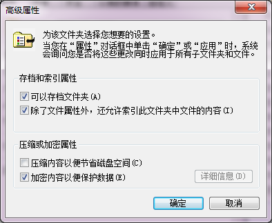

2.2 针对Windows数据的攻防
针对Windows操作系统的数据安全主要包括数据本身的安全、数据存储的安全和数据处理的安全3部分，主要面对的安全威胁包括电源故障、存储器故障、人为误操作、网络入侵、病毒、信息窃取和自然灾害等方面。
2.2.1 数据本身的安全
数据本身的安全主要通过数据加密技术来实现，包括可靠的加密算法和安全体系，常用的加密算法主要有对称加密算法和非对称加密算法（公开密钥密码体系）两种。本节重点介绍Windows提供的EFS加密和BitLocker加密方法。
1、EFS（Encrypting File System，加密文件系统）是Windows操作系统中基于NTFS（New Technology File System，新技术文件系统）实现对文件进行加密与解密服务的一项技术。

在多用户Windows操作系统中，对于不同的用户来说，可通过EFS加密自己的文件或文件夹，实现对重要数据的安全保护
1、EFS加密方法
（1）、EFS的加密过程
01、生成对称秘钥
当一个文件或文件夹被加密时，EFS调用Windows Crypto API，使用基于口令的密钥派生功能，采用Microsoft Base Cryptographic Provider随机生成一个用于加密和解密文件的对称密钥FEK（File Encryption Key，文件加密密钥）
02、生成RSA非对称密钥
在第一次使用EFS时，如果用户还没有非对称密钥（公钥和私钥对），系统会根据该用户（加密者）的SID（Security Identifier，安全标识符）生成一个1024bits的RSA非对称密钥，其中公钥保存在该账户的证书文件中。
03、加密FEK
EFS从用户证书中获取公钥，用来加密FEK。首先在文件头中创建一个数据加密域（Data Decryption Field，DDF）字段来保存用公钥加密的FEK。接着，EFS使用每一个数据恢复代理（Data Recovery Agent，DRA）证书中的公钥分别加密FEK，然后将这些经DRA加密的FEK组合起来，共同保存在加密文件的头部的数据恢复域（Data Recovery Fields，DRF）字段中。
04、安全保存私钥
系统将密钥重新加密后保存在受保护的密钥存储区域中，而非保存在Windows操作系统的SAM或其他的文件夹中。为了安全保存私钥，EFS调用数据保护API（Data Protection API）一个256bits的被称为用户主密钥（Master Key）的对称密钥，用该密钥加密私钥。被加密的私钥保存在%UserProfile%\ApplicationData\Microsoft\Crypto\RSA\SID文件夹中。
05、安全保存主密钥
EFS再次调用数据保护API，通过计算该EFS用户凭据（包括该Windows登录账户的用户名和口令）的Hash值生成一个对称密钥，再用该密钥加密用户主密钥。被加密的用户主密钥保存在%UserProfile%\ApplicationData\Microsoft\Protect\SID文件夹中。
EFS加密后的文件结构
当利用EFS加密的数据时，一旦密钥丢失数据就会为数据的恢复带来困难，为解决些问题，可以通过创建数据恢复代理（DRA）。DRA可以透明地访问其他用户加密的文件，并通过执行解密操作恢复经EFS加密的文件或文件夹，是EFS策略的一个重要部分。DRA访问加密文件的过程和加密用户访问加密文件的过程类似，也是通过公钥/私钥对来实现的。针对一个EFS加密用户，可以同时存在多个DRA，所以可能存在多个经不同DRA公钥加密的FEK。
Windows操作系统EFS加密操作
在Windows操作系统中，选取位于NTFS分区中的待加密的文件夹后，依次选择“属性→常规→高级”选项，在打开的如右图所示的对话框，选取“加密内容以便保护数据”后，就可以对指定的文件夹或文件进行EFS加密操作。

（2）、EFS的解密过程
EFS的解密是其加密操作的逆过程，当Windows合法用户需要打开经EFS加密的文件时，
主要操作步骤如下：
01.获取主密钥
EFS调用数据保护API，根据该登录账户的用户名和口令的Hash值生成一个对称密钥，再利用该密钥得到用户主密钥（Master Key）
02.取回用户私钥
通过用户主密钥，取回用户的私钥
03.解密FEK
通过用户的私钥，解密存放在文件头DDF（数据加密域）字段中的FEK
04.解密文件
用FEK解密被加密文件，得到明文数据
除以上的EFS加密用户外，其他被指派的数据恢复代理也可以通过类似的操作来解密被EFS加密的文件。
（3）、EFS的特点
一、传统的加密技术可分为对称加密和非对称加密（公钥密钥）两类，其中对称加密的效率要比非对称加密高，但对称加密的密钥管理较为困难，而EFS综合运用对称加密和非对称加密两种技术，充分利用了对称加密的高效和非对称加密的安全性优势；
二、身份认证技术是资源受保护系统对访问者身份的合法性进行验证的基础，而身份认证的关键技术是数据加密，即对数据访问者身份进行审核，只有符合条件的访问者才能对数据进行读取、写入、修改等操作。
（4）、EFS的缺点
EFS技术也存在一些设计上的缺陷和应用中的不足，主要表现为：
2、BitLocker
BitLocker全称为“Bitlocker Driver Encryption”（BitLocker驱动器加密），是从Windows Vista开始新增的一种数据保护功能，以防止计算机中存储的数据因硬盘等硬件设备丢失而造成的数据失窃或重要信息泄露等安全问题。
（1）、Windows不同版本对BitLocker功能的支持
（2）、BitLocker的加密原理
BitLocker采用128-256bits的AES(Advanced Encryption Standard,高级加密标准算法)对指定的每个扇区单独进行加密，加密密钥的一部分源自于扇区编号。为此，两个存储状态完全相同的扇区也会产生不同的加密密钥。使用AES加密数据前，BitLocker还会使用一种称为扩散器 “diffuser”的算法，确保即使是对明文的细微改变都会导致整个扇区的加密密文发生变化，这使得攻击者发现密钥或数据的难度大大增加。
1、加密秘钥
BitLocker使用FVEK（Full Volume Encrypt Key，全卷加密密钥）对整个系统卷进行加密，FVEK又被VMK（Volume Master Key，主卷密钥）加密。因此，如果VMK被攻击者破解，那么系统可以通过更换新的VMK来重新加密FVEK，而不需要对磁盘数据解密后再重新进行加密。
2、加密系统磁盘
BitLocker加密系统磁盘时，系统生成一个启动密钥和一个恢复密钥（Recovery key）。恢复密钥是一个以文件方式存在的密码文件，为48bits明文密码，该48bits的密码分为8，每组由6个数字组成，可以查看和打印保存。
BitLocker保存恢复密钥，与之对应的是启动密钥。可以使用恢复密钥解密出被加密的磁盘副本。如果将 BitLocker保护的磁盘转移到其他计算机上，可以使用恢复密钥打开被加密的文件。系统启动密钥和恢复密钥都可以备份保存。
（2）、BitLocker的工作模式
根据独立设备的不同，BitLocker主要包含TPM（Trusted Platform Module，可信平台模块）和U盘两种工作模式。
（2）、BitLocker的启用
对于存有重要数据的磁盘分区，可以利用BitLocker程序对其直接进行加密，这样只有合法用户才能访问加密的数据内容，其他用户在尝试访问被加密的数据分区时，系统会弹出类似“拒绝访问”的提示。
01、启用BitLocker
对数据分区执行“启用BitLocker”项目，在弹出右图所示的对话框中选择“使用密码解锁驱动器”或“使用智能卡解锁驱动器”，若本地计算机没有集成TPM芯片，只能选择“使用密钥解锁驱动器”方式。
02、访问加密文件
1.访问加密分区中的文件时，需要输入事先设置的密码
2.其它操作系统或其它计算机对加密分区文件的访问：
(1)若在本地计算机中同时安装的其它系统中访问加密磁盘分区中的文件，系统会弹出类似“驱动器不可用”的提示。
(2)若加密分区所在的硬盘移动到其他计算机上，该加密分区中的内容不能被直接访问
(3)若要访问加密分区内容，必须使用加密该分区时创建的备份密钥
6.当加密数据从NTFS加密驱动器复制到其他文件系统上时会自动解密
2.2.2 数据存储安全
一、数据存储的对象是指数据在加工前需要查找的信息或数据流在加工过程中产生的临时文件。
二、不管是哪类数据，都以某种格式记录在计算机内部或外部的存储介质上。
三、数据存储安全主要针对的是存储在介质上的数据的安全管理，防止攻击者窃取数据或因管理不当造成数据的丢失或损坏。
1.独立冗余磁盘阵列（RAID）技术
独立冗余磁盘阵列（Redundant Array of Independent Disks，RAID）始于20世纪80年代美国加州大学伯克利分校的一个研究项目，当时RAID被称为廉价冗余磁盘阵列（Redundant Array of Inexpensive Disks），简称为“磁盘阵列”。后来RAID中的字母I被改作了Independent，RAID就成了“独立冗余磁盘阵列”。
（1）、RAID系统的结构
RAID是由多个独立的高性能磁盘驱动器组成的磁盘子系统，由两个主要部件组成：RAID控制器和磁盘阵列。
RAID控制器
RAID系统的核心，负责数据的交换和缓冲，并管理主机（或网络）与磁盘阵列之间的数据流
可以连接SAN（Storage Area Network，存储局域网络）、NAS（Network Attached Storage，网络附属存储）或DAS（Direct-Attached Storage，直连式存储）
通常以高速接口技术（如光纤通道、SCSI等）与主机或网络相连接。
（2）、RAID的工作方式
根据系统所提供的磁盘I/O性能和数据存储安全性的不同，目前普遍使用的RAID可分为RAID0、RAID1、RAID0+1、RAID3和RAID5几个级别。
RAID0
RAID0也称为“带区集”，它是一种无冗余、无校验的磁盘阵列，写入数据时，数据先被分割成大小为64KB的数据块，然后并行存储到带区集中的每个磁盘中，系统读取磁盘数据时，将同时从各个磁盘并发读取数据块，经自动整合后形成一个完整的数据。
RAID1
RAID1即磁盘镜像，也称为“镜像磁盘阵列”,它在一个硬盘控制卡上安装两块硬盘,其中一个设置为主盘（Master），另一个设置为镜像盘或从盘（Slaver）当系统写入数据时，会分别存入两个硬盘中，两个硬盘保存有完全相同的数据。一旦一个硬盘损坏，另一个硬盘会继续工作。
RAID5
RAID5是一种带奇隅校验的带区集。它在RAID0的基础上增加了对写入数据的安全恢复功能。
数据块分散存放在带区集的所有硬盘中，每个硬盘都有一个固定区域来存放一个奇隅校验数据差错校验码(Error Correcting Code， ECC )。当任何一个硬盘失效时，可利用此奇隅校验数据推算出故障盘中的数据来，并且这个恢复操作在不停机的状态下由系统自动完成。
（2）、RAID的工作方式
在RAID的不同工作方案中（除RAID0），不论何时有磁盘损坏，都可以随时拔出损坏的磁盘再插入好的磁盘，数据不会受到损坏，失效磁盘上的内容可以很快被重建和恢复，而且整个过程都由相关的硬件或软件来完成。
2.双机热备
对于一些重要的系统来说，为了提高系统的可靠性和可用性，在一些关键部分可采用双机热备技术。
双机热备系统要求：
一台设备发生故障后，另一台设备立即能够接替工作，而且对相关的设备没有影响。
双机热备系统实现方式：
双机（活动主机和备用主机）位于同一个网络中，并共享同一个存储，之间通过心跳线实时传输彼此存在的信号。用户数据一般存放在磁盘阵列上，当活动主机出现故障无法提供正常服务后，备用主机继续从磁盘阵列上取得原有数据。
心跳
心跳的作用是让两台主机之间相互检测对方是否存在，服务是否健全，一旦任何一方心跳消失，则另一台主机立即接替继续提供服务。
目前，双机热备软件的主要功能就是处理心跳信号，在双机之间交换信息，并确保心跳和所有服务正常
双机热备实现示意图
3.数据迁移
数据迁移又称为数据的分级存储管理，是指将系统中很少使用或一段时间不用的数据，从本地存储设备迁移到辅助设备的过程。
原因：一般情况下，访问频率高的数据存放在性能较高的本地存储设备中，而访问频率低的数据则存放在相对廉价的辅助设备中。
方式：由本地设备与辅助设备构成一个协调工作的存储系统，通过制定策略对指定数据进行动态迁移。
（1）、数据迁移策略的制定和执行
4.异地容灾
异地容灾是指在相隔较远的不同地点，分别建立两套或多套功能相同的信息系统，系统之间可以进行健康状态监视和功能切换，当其中一处系统因意外（如火灾、地震等）停止工作时，整个应用系统可以自动切换到另一套，使得应用系统可以继续提供服务，保证了业务的连续。
（1）异地容灾的指标
1.衡量异地容灾技术时，用到了两个指标RPO和RTO
2.异地容灾系统所涉及的恢复技术一般包括数据恢复技术、应用恢复技术和网络恢复技术3种
（1）数据恢复技术
数据恢复技术指通过建立一个异地的数据备份系统，将其作为本地关键应用或重要数据的一个备份，以备本地数据或整个应用系统出现灾难时使用，对于数据备份和数据复制技术，根据实现方式的不同，可以分为同步传输方式和异步传输方式。
同步方式:指数据在本地和异地都保存成功后，才将数据成功存储的信息反馈给应用系统。
异步方式:数据只要在本地存储成功，就将成功存储的信息反馈给应用系统，而数据存储到异地是在后台异步完成。
（2）应用恢复技术
应用恢复技术是在数据容灾的基础上，在异地建立一套完整的与本地生产系统功能相同的备份应用系统，实现本地系统与异地系统之间的相互备份。应用恢复技术不是单纯的在异地重建一套系统，而需要包括网络、主机、应用、安全等各种资源之间的协调。
涉及技术:主要技术包括负载均衡、远程镜像、快照、虚拟化等。
数据容灾是应用容灾的技术，应用容灾是数据容灾的目标
（3）网络恢复技术
异地容灾的实质是在不同地方建立不同的数据中心，其中本地生产系统所在的数据中心称为主数据中心，而异地数据中心称为备援数据中心。
早期：主数据中心和备援数据中心之间的数据备份，主要是基于SAN（Storage Area Network，存储区域网络）的远程复制（镜像）方式来实现，即通过光纤通道（FiberChannel，FC）把不同地理位置的SAN连接起来，进行远程复制。当灾难发生时，由备援数据中心替代主数据中心的工作，以保证系统服务的持续性。
随着IP技术的发展和广泛应用，可利用基于IP的SAN互连协议（如FCIP、iFCP、Infiniband、iSCSI等），通过已有的IP网络可将主数据中心SAN中的信息远程复制到备援中心SAN中。这种基于IP SAN的远程容灾备份方式，不但使存储空间得到更加充分的利用，而且使得部署和管理更加有效。
2.2.3 数据存储安全
数据处理安全：主要指在数据处理过程的各个环节中，对数据的安全性进行管理，以防止攻击者窃取数据或造成数据的泄漏。